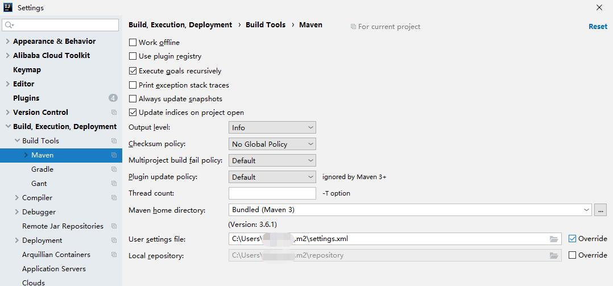

proxy代理仓库，不支持仓库搜索功能。
在用户目录下的 .m2 文件夹中创建一个 settings.xml 文件，内容如下
<settings> <mirrors> <mirror> <id>gdutnic</id> <name>gdutnic maven</name> <url>http://mirrors.gdut.edu.cn/nexus/repository/maven-public/</url> <mirrorOf>*</mirrorOf> </mirror> </mirrors> </settings>
打开 File - Settings
Build, Execution, Deployment -> Build Tools -> Maven
勾选 User settings file 后面的 Override，并指向前面的 settings.xml 文件
以Maven 3.5.2为例：
打开maven配置文件
./apache-maven-3.5.2/conf/settings.xml
找到<mirrors></mirrors>标签节点
添加一个的mirror子节点：
<mirror>
<id>nexus-gdut</id>
<mirrorOf>*</mirrorOf>
<name>Nexus gdut</name>
<url>http://mirrors.gdut.edu.cn/nexus/repository/maven-public/</url>
</mirror>
打开项目配置文件
pom.xml
添加或修改
<repositories>
<repository>
<id>nexus-gdut</id>
<name>Nexus gdut</name>
<url>http://mirrors.gdut.edu.cn/nexus/repository/maven-public/</url>
<layout>default</layout>
<snapshots>
<enabled>false</enabled>
</snapshots>
<releases>
<enabled>true</enabled>
</releases>
</repository>
</repositories>
<pluginRepositories>
<pluginRepository>
<id>nexus-gdut</id>
<name>Nexus gdut</name>
<url>http://mirrors.gdut.edu.cn/nexus/repository/maven-public/</url>
<snapshots>
<enabled>false</enabled>
</snapshots>
<releases>
<enabled>true</enabled>
</releases>
</pluginRepository>
</pluginRepositories>
执行maven update更新一下即可。